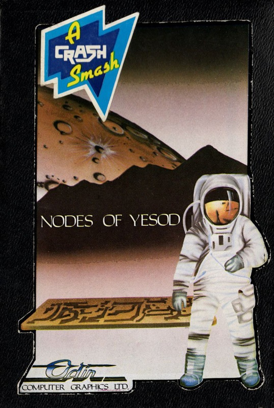
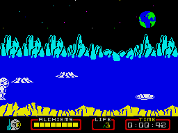
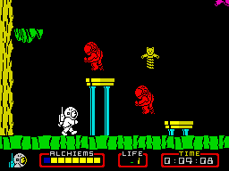
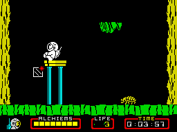

Nodes of Yesod


{kind=link}

| Publisher: | Odin Computer Graphics |
| Price: | £9.95 |
| Year: | 1985 |
| Source: | CRASH, Issue 21 |

The blurb sheet that comes with the game goes on at length to describe the home, breakfast and lifestyle of The Rt. Hon. Charlemagne ‘Charlie’ Fotheringham-Grunes (our hero, and alleged apprentice saviour of the universe). You may fancy the mission, set him by a little chap in a rhodedendron bush, rather less than the breakfast (butter dripping kippers etc) he has just downed. What the chap from ICUPS tells him in rather broken English (either that or the Odin spell-checker needs a good kick) is that they are getting some rather strange signals from the moon. Would Charlie be so kind (and so stupid) as to go and find the ‘erbschectt’ responsible?

The game begins with you wandering about on the surface of the moon (it must be the moon because in the background there is a very nice piccy of the earth). As you amble along, try to avoid falling down the holes before finding a friendly mole — the lunar moles are a helpful bunch compared to the peskies found on (and in) your average earth lawn. To give you some idea of the humour incorporated into this game the wall chewing tunnel finding mole has braces!
With mole in tow leap down one of the holes and you will find yourself in a cavern with ledges and monsters, and more ledges and monsters! Most of the monsters are a nuisance — they merely get in your way rather than doing you harm — but they are quite fun to squash. Lower down in each of the caverns you find monsters of a different composition; they are not so easy to kill, and if you get too close you will be thrown all over the place and lose a great deal of energy.

Monsters aside it’s best not to forget the main purpose of Charlie’s trip and which is to find the Monolith. He has already worked out that to get to it he needs to find and collect eight ‘keys’ or alchiems, so he must explore the caverns and stay alive. The alchiems are rather attractive crystal objects. Indeed, it is so attractive that you are not the only one collecting them, so proceed with great care if you don’t want to become a victim of what could be the first lunar mugger.
The task is pretty simple but is hugely complicated by the size of the cavern system; not all of the access routes are clear so you will have to use the mole to make extra tunnels. The game includes features such as whirlwinds that teleport you to somewhere that you would rather not be. Huge and deep shafts also exist, which can mean the certain loss of a life if you tumble down one — unless you get lucky and find that the one you just fell into has a very powerful updraft.

Extra lives can be found scattered about the sub-lunar environment, which is just as well because on the bottom of the screen you can see your vital signs ticking away, your current life force ebbing away and your movements slow with every beating you take. When you get an extra life you will also find yourself with some things called gravity sticks. These are very useful because not only do they render galactic muggers harmless but also induce a gravity field in the immediate area causing all monsters (if you can count a cuddly teddy on a spring as a monster) to fall to the bottom of the cavern.
CRITICISM
‘After starting the game I had to look twice to make sure that it was not by Ultimate. We are talking fab graphics here, a really detailed main character which somersaults with a degree of smoothness that puts a Rolls Royce to shame (RR’s work better greasy side down — Soft Ed). I really enjoyed Nodes of Yesod but I was slightly disturbed by the similarities to Underwurlde, but that aside, it’s a SMASH to say the least. Little things like the feature of the mole that chews its way through walls really add to the game. Overall an excellent game which is certainly related to one of the mega-whatsits from Imagine that we never got to see.’
‘Nodes of Yesod has got to be one of the best games this year and probably one of the most playable I have loaded into my Spectrum to date. It has brilliant graphics which are very well drawn and animated. The sound is great, and there is a fantastic speech sequence just before the last block of code loads. I love the way that your man jumps, very similar to the character in Impossible Mission on the CBM. At first sight Nodes of Yesod seems much like Underwurlde by Ultimate; in fact there are a number of other similarities, the music for example sounds very like that from Shadowfire, and the mole acts in a similar way to the servant in Dragontorc. I had trouble loading the version I was given but I understand this fault was a unique one (which is a relief). This game is certainly a CRASH SMASH.’
‘Immediately this game had loaded I was overwhelmed by its quality, and after a considerable time playing it I am even more impressed. There is so much attention to detail, the chewing noise of the mole, the movement of the characters, the inside of the caverns and tunnels, everything is well done, even down to the little oscilloscope which shows your energy level. The graphics are superb and very rewarding. There are some fantastic surprises in store and that’s what makes the game so playable. Add the fact that the game does not require the brain to work overtime to solve hundreds of ever-so-subtle problems and you have a game that is addictive but not over frustrating. A very worthy SMASH and I can’t wait to see more from Odin.’
COMMENTS
| Control keys: | Q–R/A–F up/down, alternate bottom row keys for left/right |
| Joystick: | Kempston, cursor and Interface 2 |
| Keyboard play: | Probably better than using a joystick |
| Use of colour: | Exceptional |
| Graphics: | Superlative |
| Sound: | Not extensive, but when it is used it’s great |
| Skill levels: | One |
| Lives: | Three but more can be found |
| Screens: | 256 |
| General rating: | You’ll be over the moon with this one (!) |
| Use of computer: | 92% |
| Graphics: | 96% |
| Playability: | 93% |
| Getting started: | 91% |
| Addictive qualities: | 90% |
| Value for money: | 89% |
| Overall: | 93% |